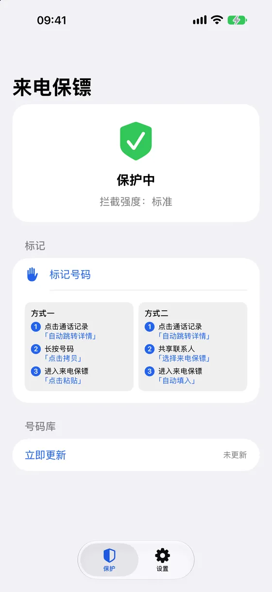
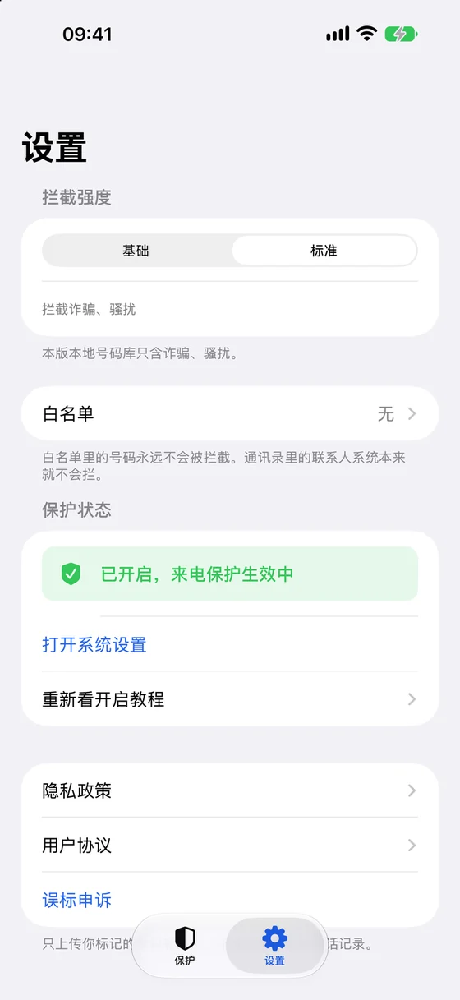
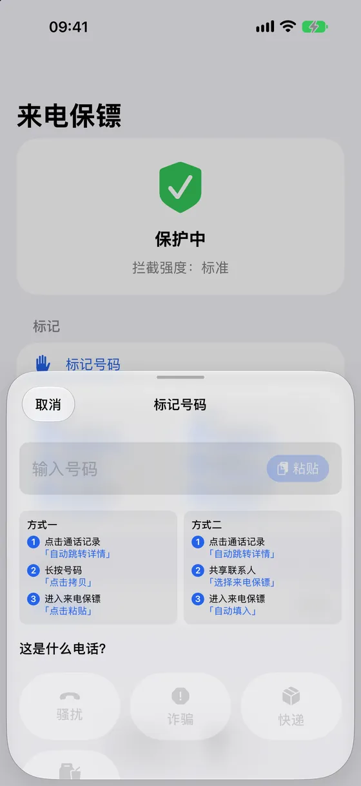
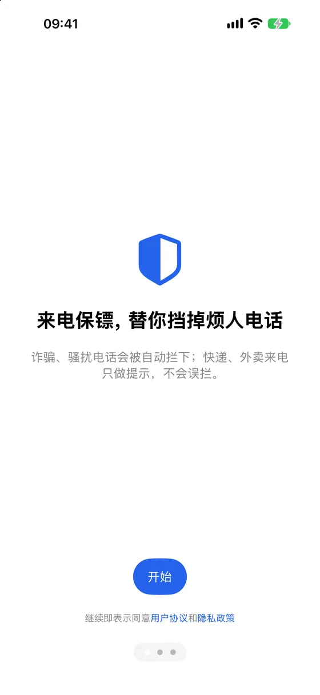

诈骗、骚扰电话
来电时直接拦下
来电保镖用 iPhone 自带的来电阻止功能，在你的手机上比对号码，命中名单就拦下。不用一直开着 App，也不用每接一个陌生电话都提心吊胆。
- 免费使用
- 无需注册登录
- 不读通讯录和通话记录

拦截在系统里完成，不用一直开着 App
只做一件事：把用户确认过的诈骗、骚扰号码挡在门外。
系统级拦截
用的是 iPhone 设置里的「来电阻止与身份识别」。开启后由系统在来电时比对，App 不用在后台运行。
号码在本机比对
号码库下载到你的手机，来电在本机比对，不会把你的来电上传。不读通讯录、通话记录和短信。
免费，无需注册
装好打开就能用，不用手机号注册，也没有广告。
两档强度，自己选
在 App 的「设置」里随时切换，马上生效。
只拦诈骗
适合常接陌生来电的人，比如做生意、等面试电话。推销、骚扰类来电照常响铃。
拦诈骗和骚扰 默认
诈骗电话和推销、骚扰电话都拦下。大多数人用这一档就够了。

由真实用户一起标出来
号码库不靠买来的数据，而是来自用户的真实标记。为了不误伤正常号码，规则定得比较严：
- 1
接到可疑电话，标记一下
在 App 里粘贴号码，或从通话记录共享给来电保镖，选是诈骗还是骚扰。
- 2
多台不同的手机都标了，才算数
一个人标记不会让号码被拦，同一个号码要被多台不同的手机标记，才会进入拦截名单。
- 3
标记保留 180 天
超过 180 天的标记会自动删除。号码换了主人或不再骚扰，就会慢慢从名单里退出。

一分钟开启拦截
iPhone 要你亲手打开一次开关，来电保镖才能拦截来电。
- 1
安装来电保镖
即将在中国大陆 App Store 上架，上架后搜索「来电保镖」即可安装。
- 2
打开 App，点「开始」
不用注册，看完引导就能进入首页。
- 3
到 iPhone 设置里打开开关
依次进入下面的位置，打开「来电保镖」：
设置 › 电话 › 来电阻止与身份识别iOS 18 及以上：设置 › App › 电话 › 来电阻止与身份识别。也可以在来电保镖的「设置」里点「打开系统设置」。
- 4
回到 App 看一眼
首页显示「保护中」，就说明已经开好了。

不读通讯录，也不看通话记录
不标记号码，就什么都不上传，本机拦截照常工作。
我们不会碰的
- 通讯录、通话记录、短信
- 你接了谁的电话、打给了谁
- 手机号注册、账号登录
- 广告追踪，或拿去给第三方做营销
你标记时才上传的
- 你标记的号码和类型
- 设备匿名标识，用来统计「多台不同手机」和防刷
- 网络地址摘要，只存哈希，用于每日次数限制，2 天后删除
- 标记数据最多保留 180 天，不读通讯录。详见隐私政策
你可能想问
为什么有些骚扰电话还是打进来了？
拦截名单来自用户的真实标记。为了避免误拦正常来电，同一个号码要被多台不同的手机标记后，才会进入拦截名单。一个人标记，不会让这个号码被拦下。
另外，如果你选的是「基础」，推销、骚扰类电话不会被拦，可以在「设置」里换成「标准」。接到可疑电话，可以在 App 里标记；标记会计入名单规则，等多台不同的手机都标记后，这个号码就会进入拦截名单。
来电保镖会读取我的通讯录或通话记录吗？
不会。来电保镖不读通讯录、通话记录和短信。拦截时由 iPhone 系统拿号码库在本机比对，你的来电不会上传。只有你主动标记号码时，才会上传这个号码和类型。
重要的电话被拦了怎么办？
在 App 的「设置 › 白名单」里加上这个号码，白名单里的号码不会被拦截。
我的号码被误标了，怎么申诉？
要收费吗？需要注册吗？
免费使用，也不用注册登录。
在哪些地区可以用？
来电保镖只在中国大陆 App Store 上架，号码库也只针对中国大陆的手机号和固话。